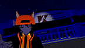
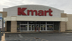

|
|
Kmart Fun Facts Kmart Financials Kmart Officers The Kmart Story Annual Report |
|
|
|||||||||||||||||
|
|
Ericirno's Start Ericirno -- whomst real name is Eric -- began his career at Kmart in 2015 as an electronics manager. When he started there Kmart had already began phasing out the electronics department, getting rid of most of their inventory of video games by clearanceing them out just a few weeks after he started. Eric understood at the time that there was always a risk his store could be the next store on the chopping block due to Sears Holdings' running out of money. He decided if anything did happen to his store that he wanted one way he could always remember it by, and that was a 3D model. He began making the store in the program SketchUp, going into immense detail as to add signage, aisles, bathrooms, and more. Eventually he stopped at a low-poly, void-of-merchandise version of his Kmart.
Transitioning to Virtual Reality Around 2017 Eric discovered VRChat and became addicted. He created the "eboy" avatar he is seen in today and began involving himself in the community. In 2019 he decided to finally make a map after one of his friends showed him their custom world. Eric figured what better to start with than a 3D model he already had, so he took his SketchUp Kmart and threw it into Unity.
 On October 21st, 2019 the VRChat Kmart Main Store had it's soft opening as a "sleepover" map. The store only had bare, low poly fixtures and a video player as the PA music in store. This version of the store was documented in this clip from Ericirno's live stream. The Eatery Express in the store was eventually replaced with a Kmart Café featuring Little Caesars due to popular request.
Partners in Asset Protection With the Kmart main store growing in popularity, Ericirno approached the LPD to be Kmart's third-party security. After awaiting a few days for a response, and joining their Discord, the higher-ups agreed to allow officers to patrol in the store.
 VRChat Kmart opened right before the holidays, and with Ericirno's map making skills being little to none, he was desperately trying to learn as much Unity as he could within a short time span. Eric threw together a very hasty Black Friday promotion as he got ready to go to his real work and brace the crowds. He made a Reddit post and went to work, not knowing VRChat Kmart was about to experience it's first major night of popularity VRChat Kmart experienced a massive influx of traffic during December as Christmas shopping was on everyone's minds. People from all over the world stopped into the - still less detailed - store as the Christmas music played on.
Now Hiring! With these avatars in hand, Eric began accepting applications of players wanting to work at the store. Giving manager positions to those who had been the most active. The store started becoming more self-sufficient, able to run without Ericirno being present.
 Eric wanted to make the VRChat Kmart seem more realistic by photo scanning real Kmart fixtures and merchandise into the game. He went to the Kmart closest to his home and got permission from the associates to photograph in the store as long as he didn't photograph any customers. He began scanning in merchandise and fixtures and later going home and Photoshopping them to fit in-game objects.
|
||||||||||||||||